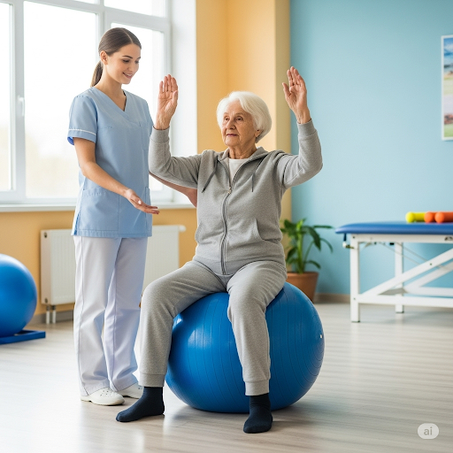

ท่านั่งทรงตัวบนลูกบอลหรือวัสดุที่นิ่ม (หรือหมอนนิ่ม)
การออกกำลังกายในท่านี้เป็นการออกกำลังกายเพื่อเพิ่มการทรงตัวและความแข็งแรงของกล้ามเนื้อลำตัวลูกบอลควรแข็งแรงและลูกใหญ่
หรืออาจใช้หมอนนิ่ม หรือหมอนยางพาราแทนได้ ท่านี้อาจต้องมีคนช่วยอยู่ใกล้ๆ เพื่อคอยช่วยเหลือระวังล้ม
1.เริ่มจากนั่งบนลูกบอลหรือหมอนโดย เท้าวางราบกับพื้น
2.พยายามนั่งหลังตรง ยืดตัวตรง
3.ถ้านั่งทรงตัวเก่งขึ้นแล้ว อาจเพิ่มความยากด้วยการค่อยๆ ยกแขนทั้งสองข้างขึ้นแล้ววางลง ทำซ้ำ 8-10 ครั้ง และอาจทำ 2 รอบ เท่าที่ทำไหว
4.หรือถ้าเก่งมากขึ้น อาจยกแขนขึ้นสูงที่สุด แล้วข้างไว้ 5-10 วินาที แล้วค่อยเอาแขนลง
5.หรือถ้าเก่งขึ้นอีกระดับอาจถือน้ำหนักไว้ที่มือสองข้าง เท่าที่ไหว